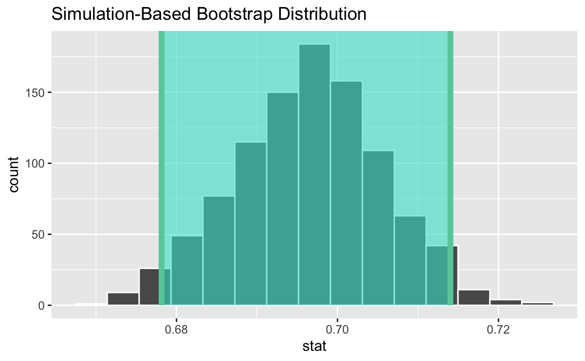
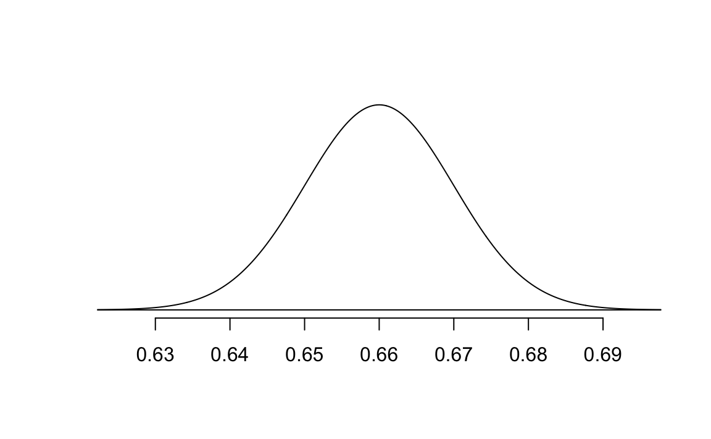

The goal of this lab is to demonstrate understanding of material from Chapters 11-13. In particular, we will do an inference on a single population proportion and
Critique data-based claims
Compute and interpret confidence intervals.
Articulate the basic steps in a hypothesis test.
1 Introduction
In a survey conducted by Survey USA between September 30, 2023 and October 3, 2023, 2759 registered voters from all 50 US states were asked:
America will hold an election for President of the United States next November. Not everyone makes the time to vote in every election. Which best describes you? Are you certain to vote? Will you probably vote? Are the chances you will vote about 50/50? Or will you probably not vote?
Based on these responses, we can ask whether we expect voter turnout to be greater than it was in the 2020 presidental election. That year, 66% of the voting-eligible population turned out for the presidential election (the highest rate for any national election since 1900).
Packages and Data
For this analysis, we’ll use the tidyverse and tidymodels packages.
library(tidyverse)library(tidymodels)
The data from this survey is in the file voting-survey.csv saved in your posit.cloud workspace.
voting_survey <-read_csv("voting-survey.csv")
2 Preliminary Analysis
Task 1
Make a bar chart to visualize the distribution of responses. Then calculate the proportion of respondents who are certain to vote in the next presidential election.
# A tibble: 5 × 2
vote n
<chr> <int>
1 About 50/50 chance 293
2 Certain to vote 1921
3 Not sure 44
4 Probably will not vote 92
5 Will probably vote 409
# A tibble: 5 × 3
vote n prop
<chr> <int> <dbl>
1 About 50/50 chance 293 0.106
2 Certain to vote 1921 0.696
3 Not sure 44 0.0159
4 Probably will not vote 92 0.0333
5 Will probably vote 409 0.148
voting_survey |>count(vote) |>mutate(p_hat = n /sum(n)) |>filter(vote =="Certain to vote")
# A tibble: 1 × 3
vote n p_hat
<chr> <int> <dbl>
1 Certain to vote 1921 0.696
Task 1 Solution
The proportion of survey respondents that say they are certain to vote is \(\hat{p} = 0.696\)
Estimation with Confidence Interval
Our goal in this section is to estimate the true proportion of registered US voters who are certain to vote in the next presidential election, based on these data.
Task 2
What is the parameter of interest?
Task 2 Solution
Proportion of all registered voters, \(p\), who are certain to vote in the next presidential election
We can use the bootstrap technique of Chapter 12 (and which we used in AE 07) to estimate a 95% confidence interval. Below is a histogram of the sample distribution, along with the confidence interval shaded in.

Task 3
Suppose the bounds of this confidence interval are L = 0.678 and U = 0.714. Your friend offers the following interpretation:
95% of the time, the true proportion of registered US voters who are certain to vote in the next presidential election is between L and U.
Comment on this interpretation. Is it correct? If not, how would you fix it?
Task 3 Solution
Not correct. We are 95% confident that 68.1% to 71.3% of all registered voters are certain to vote in the next presidential election.
3 Hypothesis Testing
A newspaper claims that based on this study, the number of voters certain to vote in the 2024 election will be greater than it was in 2020. Do these data provide convincing evidence for this claim?
Task 4
What are the null and alternative hypotheses?
Task 4 Response
H0: There is nothing going on, 66% of registered US voters are certain to vote in the next presidential election. p = 0.66.
HA: There is something going on, more than 66% of registered US voters are certain to vote in the next presidential election. p > 0.66.
Task 5
Before we go any further, we should decide on a discernment level. What discernment level will you use and how did you decide? In your response, you should say something about Type I and Type II errors.
Task 5 Response
Type I error – incorrectly reject the null hypothesis. This means we incorrectly conclude that more than 66% will vote. Consequences might include a false sense of vote engagement with candidates or issues. This could lead to complacency around get out the vote efforts. If we want to avoid Type I errors, we might set \(\alpha = 0.01\)
Type II error – incorrectly failing to reject the null hypothesis. This means incorrectly concluding that we don’t have evidence to suggest voter turnout will be higher. Consequences might include underestimating voter engagement with candidates or issues. If we want to avoid Type II errors, we might set \(\alpha = 0.1\)
Task 6
Because the conditions of the CLT are met, we can use a normal distribution to find the p-value instead of using a simulation. Assuming the null hypothesis is true, where would this normal distribution be centered? Replace the 0 in the code chunk below with the correct value, and replace the 1 with 0.01 which is the appropriate standard error (SE) for this problem. We will see a formula that gives us this value in Chapter 17 but we’ll just assume this for now.
Task 6 Response
The null hypothesis is that the proportion has not changed - \(p = 0.66\) - so distribution would be centered there.
openintro::normTail( m =0.66, s =0.01)

Task 7
Using the SE value 0.01 and appropriate the values for \(\hat{p}\) and \(p\), find the Z-score for the observed statistic.
Then find the p-value corresponding to this Z-value.
Task 7 Response
Enter your responses to Task 7 here. The Z-score is approximately 3.6.
1-pnorm(3.6)
[1] 0.0001591086
The p-value is approximately 0.0002, which is much lower than even the 1% discernability level, so we would reject the null hypothesis. The data provide convincing evidence for the alternative hypothesis.
Interpreting the p-value
Task 8
Suppose the p-value you found is P, and your friends are in disagreement about the interpretation about this value. One friend claims:
The probability that 66% of all of registered US voters are certain to vote in the next presidential election is approx P.
Another friend claims:
The probability that more than 66% of all of registered US voters are certain to vote in the next presidential election is approx P.
Who is right? Explain your reasoning.
Task 8 Response
Enter your responses to Task 8 here.
Both friends are wrong. The p-value is neither the probability of \(H_0\) being true, nor the probability of \(H_A\) being true.
Task 9
Summarize your findings in the context of this problem.